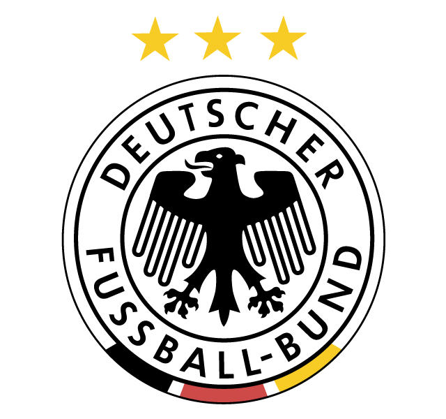

por Pedro Henrique B. N. Prado

Rotulada como favorita em qualquer disputa pela tradição de chegada, a Alemanha se apresenta para a Copa do Mundo de 2010 credenciada não apenas pela mística. As campanhas recentes colocam os tricampeões mundiais entre os principais destaques para o Mundial da África do Sul.
Depois de ficar em terceiro lugar na Copa de 2006, a Alemanha foi vice-campeã da Eurocopa de 2008, perdendo a final para a Espanha. Nas eliminatórias para 2010, os alemães terminaram invictos no Grupo 4, com oito vitórias e dois empates.
O time comandado pelo técnico Joachim Löw foi renovado nos últimos anos. Jovens como os defensores Beck e Tasci, assim como o meia Ozil, ganharam espaço nas convocações recentes. O atacante Cacau, brasileiro naturalizado alemão, também vem tendo oportunidades na equipe e deve estar no grupo que vai à Copa do Mundo.